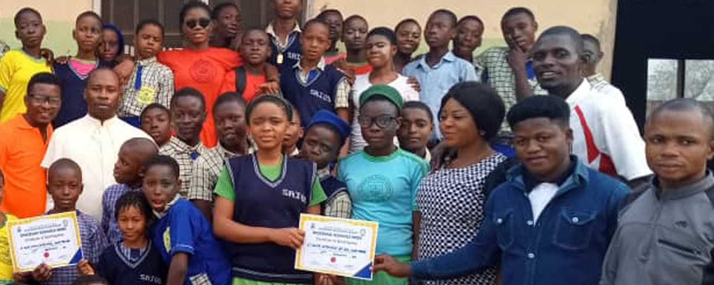
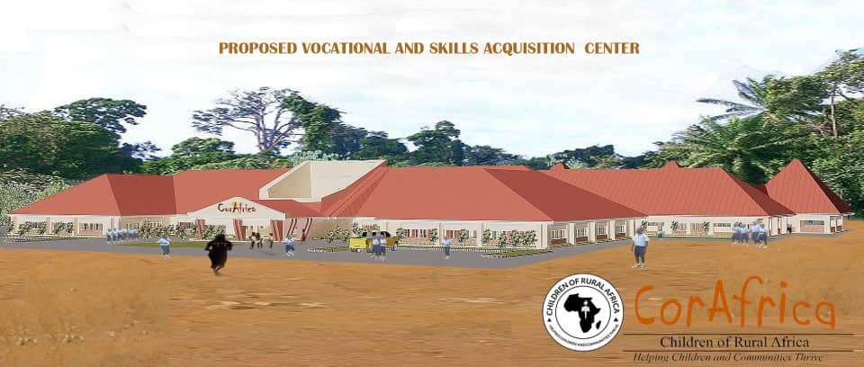

Computer studies
Functional computer laboratories with stable connectivity, reliable power with backup, trained ICT staff and proper security.


We go a step beyond the conventional classroom and equip our schools so that a student leaves with a trade as well as a certificate. The centres are designed as working pilots rather than lessons, and the first purpose-built one is planned for Ogoja.
The design
Our educational component runs from primary and secondary schooling through to tertiary support and vocational skills acquisition. A skills centre is designed to include the sections below, each one run as a working pilot rather than a lesson.
Functional computer laboratories with stable connectivity, reliable power with backup, trained ICT staff and proper security.
Sewing, pattern drafting and fabric selection — creativity and entrepreneurship, with income from garment production.
Hairdressing, make-up artistry and skincare, with the customer-service grounding that makes self-employment viable.
Cooking, nutrition, budgeting, childcare and household management — supporting healthy living and catering businesses.
Performance, production and teaching. Discipline, confidence and teamwork, with a route into content creation.
Precise drawing for engineering and architecture — critical thinking, and the foundation for every technical trade.
Creativity, innovation and communication, with income from art sales and design services across the creative industries.
Masonry, blocklaying and concreting, carpentry and joinery, furniture and upholstery, plumbing, tiling, painting and interior finishing, aluminium work, and solar PV installation and maintenance.
Mechanised agriculture and operations, and livestock farming — beekeeping, poultry and animal husbandry.
The first centre
Ogoja is farming country — yams, cassava, corn, rice, palm oil and kernels — with a young population and very little work for it. By our own feasibility work, around one in ten young people there reaches higher education, and most of those who do must leave to find it. Those who finish school and can neither train nor trade go to the cities as house helps, nannies and street children. A centre of their own is what we have put to donors: somewhere to learn a trade without leaving home.

Graduands of the Thomas McGettrick Institute of Technology and of St. Joseph’s Orphanage and Schools, who want a specific skill on top of their training to make them employable.
The great majority of Ogoja’s young people, who are not in work and have nowhere to train. Students would learn a skill of their choice and be attached to a local artisan for the practical.
Young people displaced from their homes by the conflict in Cameroon, who crossed into Cross River State at Adagom, in Ogoja, and have no way to earn.
Internally displaced young people from neighbouring Benue State, made homeless by herdsmen on their land and robbed of their schooling.
Six departments
The centre is planned in six departments. Between them they carry close to fifty trades — and this is the list we costed, not a wish list written afterwards.
Handicrafts, photography, music and hairdressing.
Website design, desktop publishing, graphics, computer networking and network installation, digital marketing, computer hardware and GSM repair, social media communication, and digital media production.
Electrical installation, electronics, auto mechanics, auto-body work, welding and fabrication, blacksmithing, motorcycle and tricycle repair, vulcanising and tyre repair, refrigeration and air conditioning, and automobile CNG conversion.
Tailoring and design, beadmaking, shoemaking, interior design and decoration, and cosmetology.
Masonry, bricklaying, blocklaying and concreting, woodwork, carpentry and joinery, furniture and upholstery, plumbing and pipefitting, tiling, floor cladding and interlocking, painting, decoration and interior finishing, draughting, aluminium work, and solar PV installation and maintenance.
Mechanised agriculture — mechanics and operations — and livestock farming: beekeeping, poultry and animal husbandry.
What it would cost
The estimate in our appeal, which covers the first year of running costs as well as the building itself. Nothing here has been spent: the centre is proposed, and this is the figure we are raising.
What it takes to work
Staff are to be recruited from known institutions, with experts drawn from local artisans known to us over many years — administrative staff, professional teachers and skilled labourers.
Every department is to be furnished and equipped to match its training, so that a vocational track is genuinely practised and not merely described.
Partnerships with donors and bilateral organisations are intended to carry students through to certification and job placement.
Support the work
CORAfrica is a registered 501(c)(3) in the United States, so gifts from US donors are tax-deductible. Give monthly, and we can plan.